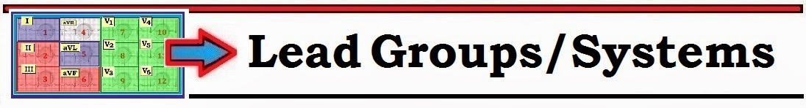
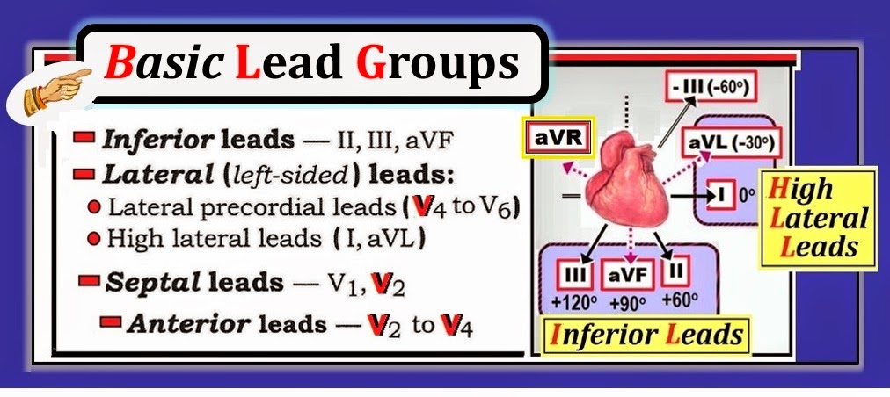
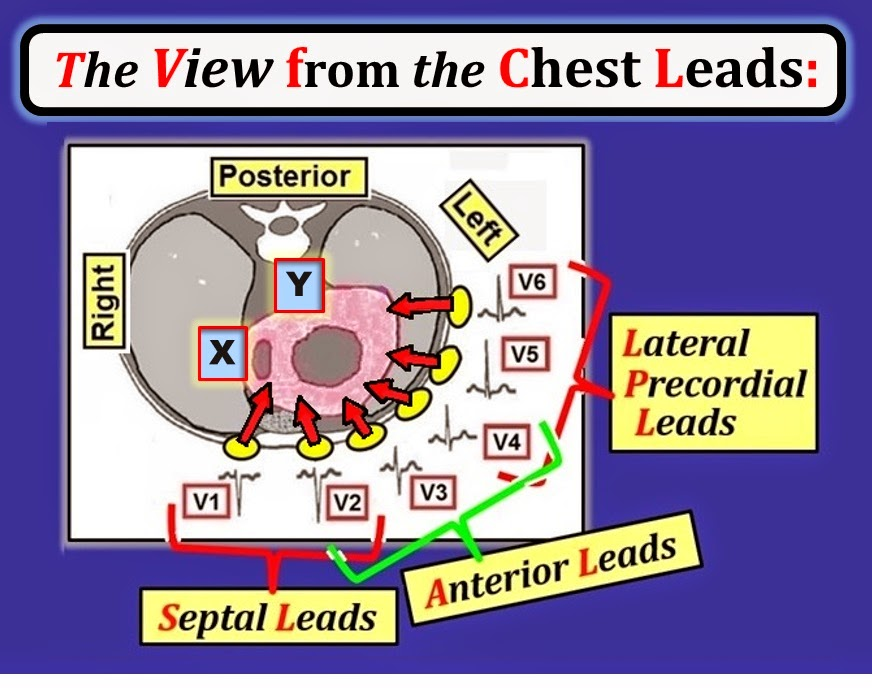
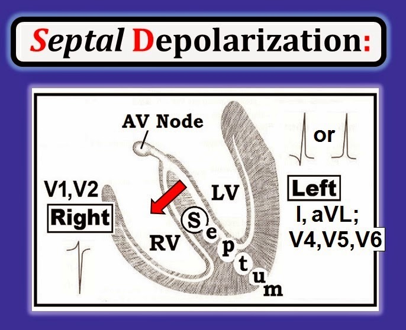
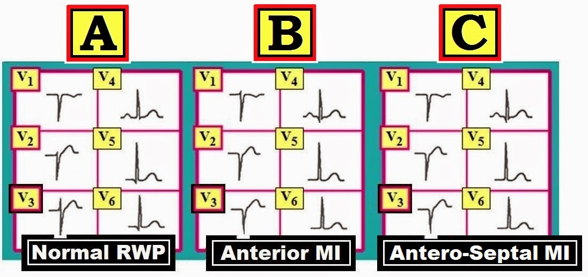
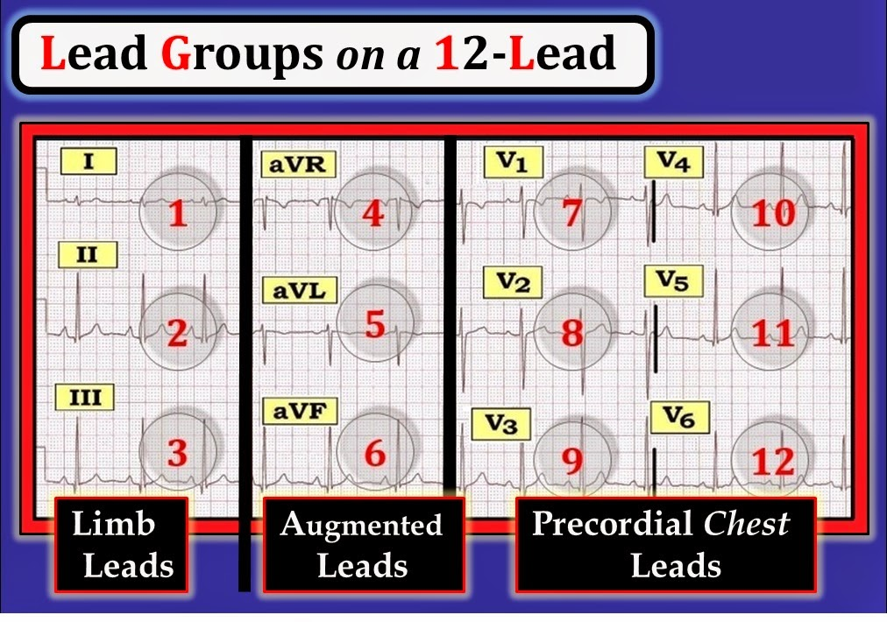
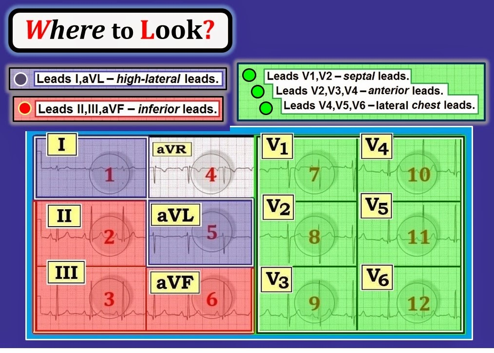

ECG Blog #91 (Basic Concepts-4) — Các nhóm chuyển đạo

--------------------------------
Đây là kỳ thứ 4 của loạt bài Khái niệm Điện tâm đồ Cơ bản. Thay vì các ca cụ thể — mục tiêu của các bài Khái niệm Điện tâm đồ Cơ bản này là ôn tập ngắn gọn một số chủ đề ít chuyên sâu hơn, vốn tạo nên nền tảng của việc đọc điện tâm đồ. Tài liệu này được trích (có chỉnh sửa) từ cuốn sách nhập môn đọc điện tâm đồ mới của tôi = “A 1st Book on ECGs-2014” và/hoặc 1st-ECG-Book-ePub phiên bản (đã phát hành trên kindle-nook-kobo-ibooks) mở rộng. RẤT MONG nhận được phản hồi của các bạn về loạt bài này!
--------------------------------
- LƯU Ý: Để bài viết sát thực tế hơn — một số điểm nâng cao đã được bổ sung, minh hoạ một số khái niệm chọn lọc về Nhóm chuyển đạo theo Giải phẫu và theo Điện tâm đồ (phần nâng cao này được trích từ ECG-2014-ePub của chúng tôi). Như vậy — Chúng tôi hy vọng bài viết này hữu ích và thú vị với người đọc điện tâm đồ ở mọi trình độ.
--------------------------------
LIÊN KẾT tới các bài Khái niệm Điện tâm đồ Cơ bản trước:
- Basic Concepts #1 — Thuật ngữ QRS
- Basic Concepts #2 — Các khoảng (PR/QRS/QT )
- Basic Concepts #3 — Trục
- Basic Concepts #4 (chính là bài này! ) — Các nhóm chuyển đạo
- Basic Concepts #5 — LVH
- Basic Concepts #6 — Cách tiếp cận hệ thống
- Basic Concepts #7 — Thay đổi Q-R-S-T
--------------------------------


--------------------------------
Khi đọc điện tâm đồ — Điều quan trọng là phải biết chuyển đạo nào nhìn vùng nào của tim. Trọng tâm của bài Khái niệm Điện tâm đồ Cơ bản #4 này — là trình bày ngắn gọn bằng hình ảnh các Nhóm chuyển đạo điện tâm đồ được thiết kế để đạt mục tiêu đó.
- Cần hiểu rằng thuật ngữ điện tâm đồ dùng để định khu giải phẫu có sự khác biệt — ngay cả giữa các chuyên gia điện tâm đồ hàng đầu. Sự khác biệt này tuỳ thuộc vào vùng miền — cũng như quan điểm của các chuyên gia sống tại khu vực địa lý của bạn hoặc đang công tác tại cơ sở nơi bạn hành nghề. Tuy những khác biệt về thuật ngữ điện tâm đồ như vậy có thể gây bối rối cho người đọc ít kinh nghiệm — Chúng tôi cho rằng chúng mang lại góc nhìn rộng hơn, rốt cuộc giúp hiểu sâu hơn. Mục đích của chúng tôi trong bài Basic Concepts #4 này — là đưa ra góc nhìn mà qua thời gian chúng tôi thấy hữu ích nhất để phân loại vị trí của các dấu hiệu điện tâm đồ mà bạn phát hiện.
--------------------------------
Các nhóm
Chuyển đạo Cơ bản
“Con mắt đã được rèn luyện” tập trung vào các Nhóm chuyển đạo cụ thể được trình bày trong Hình 1.
- LƯU Ý 1: Có sự chồng lấn giữa các vùng chuyển đạo trước tim (tức là chuyển đạo V2 vừa là chuyển đạo vách vừa là chuyển đạo trước — và — chuyển đạo V4 vừa là chuyển đạo trước vừa là chuyển đạo bên).
- LƯU Ý 2: Chúng tôi không gán một số độ cụ thể cho góc nhìn của chuyển đạo aVR. Chỉ cần coi chuyển đạo aVR là một chuyển đạo phía phải ở xa là đủ.


--------------------------------
Nhìn Kỹ hơn vào Góc nhìn của các Chuyển đạo Ngực
Góc nhìn tim mà mỗi chuyển đạo trong 6 Chuyển đạo trước tim (Chuyển đạo ngực) nhận được được trình bày dạng sơ đồ trong Hình 2 (các mũi tên màu đỏ).
- Như đã gợi ý trong Hình 1 — có sự chồng lấn ở vùng giải phẫu được nhìn bởi chuyển đạo V2 và chuyển đạo V4 (các ngoặc màu đỏ và màu xanh lá trong Hình 2).
- Lưu ý rằng có 2 vùng của tim không được nhìn trực tiếp bởi bất kỳ chuyển đạo nào trong 6 chuyển đạo ngực (được đánh dấu X và Y trong Hình 2). Có thể dùng các chuyển đạo đặc biệt để nhìn RV (thất phải — Right Ventricle = X) và thành sau của LV (thất trái — Left Ventricle), là điểm được đánh dấu “Y” trong Hình 2. Để đơn giản — Lúc này chúng tôi không đi sâu vào chủ đề các chuyển đạo bên phải và/hoặc chuyển đạo phía sau. Chỉ cần Nhớ rằng điện tâm đồ không hoàn hảo và không nhìn thấy đầy đủ mọi vùng của tim.


--------------------------------
Khái niệm Nâng cao: Các chuyển đạo V1 và V2 được ghi là “chuyển đạo vách” trong Hình 1 và Hình 2. Dù vậy — có hai cách gọi khác cũng thường được dùng để mô tả góc nhìn giải phẫu của 2 chuyển đạo này:
- Các chuyển đạo V1 và V2 — thường được gọi là chuyển đạo “trước vách” (vì góc nhìn của chuyển đạo V2 chồng lấn giữa vách liên thất và thành trước thất trái). Trên lâm sàng — thiếu máu cục bộ hoặc nhồi máu vách gần như luôn đi kèm với ít nhất một phần tổn thương thành trước.
- Các chuyển đạo V1 và V2 — cũng thường được gọi là chuyển đạo “phía phải” — vì vị trí giải phẫu đặt điện cực để ghi chuyển đạo V1 và V2 rõ ràng nằm về phía bên phải so với vị trí đặt 4 điện cực ngực còn lại (Xem Hình 2). Hiểu rằng chuyển đạo V1 và V2 nằm “phía phải” về vị trí giải phẫu — sẽ giúp hiểu cơ sở của các dấu hiệu điện tâm đồ của LVH (phì đại thất trái — Left Ventricular Hypertrophy) và blốc nhánh mà chúng tôi sẽ trình bày trong các kỳ Khái niệm Cơ bản tới.
--------------------------------
Phân biệt giữa NMCT thành trước với NMCT Trước Vách
Người ta thường lẫn lộn khi phân biệt giữa nhồi máu ở vị trí “thành trước” với nhồi máu ở vị trí “trước vách”. Trên lâm sàng — tổn thương vách thực sự có khả năng xảy ra cao nhất khi có tắc đoạn gần của LAD (động mạch liên thất trước — Left Anterior Descending coronary artery), với vị trí tắc nằm trước chỗ xuất phát của nhánh xuyên vách thứ nhất.
- Tắc LAD đoạn gần dễ gây tổn thương hệ dẫn truyền cần đặt máy tạo nhịp hơn so với tắc LAD đoạn giữa hoặc đoạn xa.
- Các rối loạn dẫn truyền nặng tương tự có thể xảy ra khi tắc cấp thân chung động mạch vành trái — nhưng những bệnh nhân này thường tử vong vì sốc tim trước khi tới được bệnh viện.
Việc nhận diện tắc LAD đoạn gần cấp trên điện tâm đồ không được bàn ở đây. Điều chúng tôi có đề cập trong bài Basic ECG Concepts #4 này — là ngữ nghĩa của các thuật ngữ mà chúng tôi ưa dùng để nhận diện nhồi máu thành trước có nhiều khả năng tổn thương vách.
- Mối tương quan giữa việc nhận diện “tổn thương vách” trên điện tâm đồ và nguy cơ xuất hiện blốc AV hoàn toàn còn xa mới hoàn hảo. Dù vậy — hiểu rằng chuyển đạo V1 và V2 là chuyển đạo “vách” giúp dễ áp dụng hệ thống định khu các thay đổi điện tâm đồ của chúng tôi.
Hình 3 minh hoạ vì sao chuyển đạo V1 và V2 được coi là chuyển đạo “vách”. Với nhịp xoang bình thường — xung điện khởi phát từ nút xoang (SA) — đi qua tâm nhĩ — rồi đến nút AV. Sau khi đi qua nút AV và bó His — phần đầu tiên của tâm thất khử cực là phía trái của vách liên thất. Do đó — khử cực vách bình thường đi theo hướng từ trái sang phải (mũi tên đỏ hướng từ trái sang phải trong Hình 3).
- Do hướng khử cực vách ban đầu từ trái sang phải này — các chuyển đạo phía trái (I,aVL; V4,V5,V6) bình thường thấy hoạt hoá thất ban đầu đi ra xa — đó là lý do các sóng q vách nhỏ thường thấy được một cách bình thường ở một hoặc nhiều chuyển đạo bên (Hình 3).
- Ngược lại — các chuyển đạo phía phải (V1,V2) bình thường thấy hoạt hoá thất ban đầu đi hướng về vị trí trên ngực nơi đặt các chuyển đạo này. Điều này giải thích vì sao sóng r nhỏ ban đầu thường thấy ở chuyển đạo V1 và/hoặc chuyển đạo V2 (Hình 3). Sóng r nhỏ ban đầu này biểu thị khử cực vách. Nó mất đi khi có nhồi máu vách (Hình 4).


--------------------------------
Tăng tiến sóng R bình thường được thể hiện trong chuỗi chuyển đạo trước tim ở Ô A của Hình 4. Lưu ý rằng biên độ sóng R tăng dần khi đi qua các chuyển đạo trước tim cho đến khi đạt tới điểm “Chuyển tiếp” (nơi sóng R cao hơn độ sâu của sóng S). Vùng chuyển tiếp bình thường nằm giữa chuyển đạo V2 đến V4. Ở Ô A, vùng chuyển tiếp nằm giữa chuyển đạo V3 và V4. Các dấu hiệu bình thường khác ở Ô A gồm:
- Một sóng Q (hoặc phức bộ QS) đơn độc khu trú ở chuyển đạo V1 (với sóng r dương nhỏ xuất hiện từ chuyển đạo V2 — và tăng tiến sóng R bình thường sau chuyển đạo V2).
- Các sóng q vách nhỏ và hẹp ở một hoặc nhiều chuyển đạo bên (thấy ở đây tại chuyển đạo V5,V6 của Ô A).
ĐIỀU CỐT LÕI — Không có bằng chứng điện tâm đồ của nhồi máu trong chuỗi chuyển đạo trước tim ở Ô A của Hình 4. Tuy không phải là không thể — nhưng ít có khả năng đã xảy ra nhồi máu vách khi phức bộ QS chỉ thấy ở chuyển đạo V1.


--------------------------------
Ô B trong Hình 4 — gợi ý đã từng xảy ra MI (nhồi máu cơ tim — Myocardial Infarction) thành trước vào một thời điểm nào đó. Lưu ý các điểm sau:
- Chuyển đạo V1 có một sóng dương ban đầu (sóng r). Điều này gợi ý vách liên thất nhiều khả năng còn nguyên vẹn.
- Sau đó có “mất sóng r” giữa chuyển đạo V1 và chuyển đạo V2,V3. Thay vì biên độ sóng r tăng dần — lại thấy phức bộ QS sâu ở chuyển đạo V2,V3. Có một sóng q nhỏ ở chuyển đạo V4 — nhưng không có sóng q ở V5 lẫn V6. Hình ảnh này gợi ý nhồi máu thành trước đơn độc (tức là không tổn thương vách).
- Điểm nâng cao: Hình ảnh điện tâm đồ ở Ô B cũng có thể do đặt sai vị trí điện cực. Nếu có chỉ định lâm sàng — ghi lại điện tâm đồ sau khi kiểm tra vị trí điện cực có thể giải quyết vấn đề này.
ĐIỀU CỐT LÕI — Tuy phải thừa nhận độ chính xác của các thuật ngữ trên trong nhận diện "tổn thương vách" là chưa hoàn hảo — việc coi V1,V2 là “chuyển đạo vách” cho phép có một hệ thống định khu chuyển đạo đơn giản và dễ vận dụng.
Ô
C
trong Hình 4 — gợi ý đã xảy ra MI trước vách.
- Khác với Ô B — việc hoàn toàn không có sóng r ở chuyển đạo V1, V2 và V3 gợi ý có tổn thương vách bên cạnh nhồi máu thành trước.
--------------------------------
Nhìn ở Đâu trên điện tâm đồ 12 chuyển đạo?
Quay lại phần ôn tập bằng hình ảnh về chuyển đạo nào nhìn vùng nào của tim — Hình 5 minh hoạ dạng sơ đồ nơi cần nhìn để tìm 3 Nhóm chuyển đạo trên điện tâm đồ 12 chuyển đạo:
- Nhóm 1 — gồm 3 Chuyển đạo chi = chuyển đạo I, II, III.
- Nhóm 2 — gồm 3 Chuyển đạo tăng thế = chuyển đạo aVR, aVL, aVF.
- Nhóm 3 — gồm 6 Chuyển đạo ngực = chuyển đạo V1 đến V6.


--------------------------------
Trong Hình 6 — Chúng tôi mã hoá màu vùng tim được nhìn bởi mỗi chuyển đạo trong 12 chuyển đạo của điện tâm đồ chuẩn. “Con mắt đã được rèn luyện” tự động bao quát các chuyển đạo cùng màu trong cùng một cái nhìn:
- Chuyển đạo bên cao — Chuyển đạo I, aVL (màu tím).
- Chuyển đạo dưới — Chuyển đạo II, III, aVF (màu hồng).
- Chuyển đạo ngực vách — Chuyển đạo V1,V2 (màu xanh lá).
- Chuyển đạo ngực trước — Chuyển đạo V2,V3,V4 (màu xanh lá).
- Chuyển đạo ngực bên — Chuyển đạo V4,V5,V6 (màu xanh lá).


--------------------------------
LƯU Ý: Những thông tin tương tự được trình bày dưới nhiều hình thức khác nhau trong các Hình của bài này, với hy vọng làm rõ chủ đề các Nhóm chuyển đạo và các vùng giải phẫu của tim mà mỗi chuyển đạo nhìn thấy.
- Khi xem Hình 6, hãy nhớ rằng có sự chồng lấn giữa các vùng chuyển đạo ngực trước tim (tức là chuyển đạo V2 vừa là chuyển đạo vách vừa là chuyển đạo trước — và — chuyển đạo V4 vừa là chuyển đạo trước vừa là chuyển đạo bên).
Điểm nâng cao (Vượt ra ngoài phần cốt lõi): Trong những năm gần đây — các nghiên cứu tương quan bằng MRI giữa giải phẫu tim, phân bố động mạch vành và các dấu hiệu điện tâm đồ đã cho thấy thuật ngữ điện tâm đồ truyền thống không chính xác như từng nghĩ (Bayes de Luna và cs.: Circulation 114:1755, 2006). Như vậy, mối liên quan giải phẫu của thành sau thất trái — trên thực tế không nằm "phía sau" trực tiếp như chúng ta vẫn nghĩ.
- Điều mà theo truyền thống vẫn được coi là tổn thương thành “sau” — chính xác hơn nên gọi là tổn thương một phần thành bên của LV.
Một hệ thuật ngữ mới, chính xác hơn về mặt giải phẫu, đã được đề xuất:
- Hệ thuật ngữ mới sẽ đổi cách gọi thành sau LV — thành thành bên.
- Các nghiên cứu tương quan bằng MRI cũng gợi ý rằng việc xếp chuyển đạo aVL là chuyển đạo “bên cao" là không chính xác về mặt giải phẫu. Thay vào đó, dấu hiệu sóng Q nhồi máu trên điện tâm đồ ở chuyển đạo aVL và/hoặc chuyển đạo I — nhưng không có sóng Q ở chuyển đạo V6 — biểu thị MI thành trước-giữa chứ không phải tổn thương “bên cao".
- THIÊN KIẾN CỦA TÔI: Dù nhận thấy lợi ích to lớn tiềm năng mà các nghiên cứu tương quan MRI có thể mang lại cho việc định khu giải phẫu chính xác hơn — thuật ngữ điện tâm đồ truyền thống dường như vẫn bám rễ ở thời điểm hiện tại. Thay vì làm rối vấn đề bằng một hệ thuật ngữ điện tâm đồ mới chưa được dùng rộng rãi — Chúng tôi ủng hộ tiếp tục dùng thuật ngữ nhồi máu sau (vẫn tiếp tục phân biệt giữa thành bên với thành sau của tim) — và tiếp tục mô tả chuyển đạo aVL là chuyển đạo “bên cao". Chúng tôi hoàn toàn thừa nhận rằng vào một lúc nào đó trong tương lai — việc hệ thuật ngữ dựa trên tương quan MRI được chấp nhận rộng rãi hơn có thể thay đổi cách chúng ta định khu các vùng giải phẫu trên điện tâm đồ.
--------------------------------
— Để biết thêm thông tin — TRUY CẬP —
- Phần lớn nội dung và các Hình #1,2 và 5,6 được trích từ ấn phẩm mới nhất của chúng tôi = “A 1st Book on ECGs-2014” và/hoặc từ phiên bản ePub 1st Book mở rộng (có trên kindle-kobo-nook-ibooks).

- -
- Phần nội dung nâng cao hơn và các Hình #3,4 được trích từ ECG-2014-Pocket Brain và/hoặc từ phiên bản ePub ECG-2014 mở rộng (có trên kindle-kobo-nook-ibooks).

- -
- Mời các bạn tải miễn phí BẢNG THUẬT NGỮ mở rộng của chúng tôi về các thuật ngữ liên quan đến điện tâm đồ -

- -
--------------------------------------------------------------